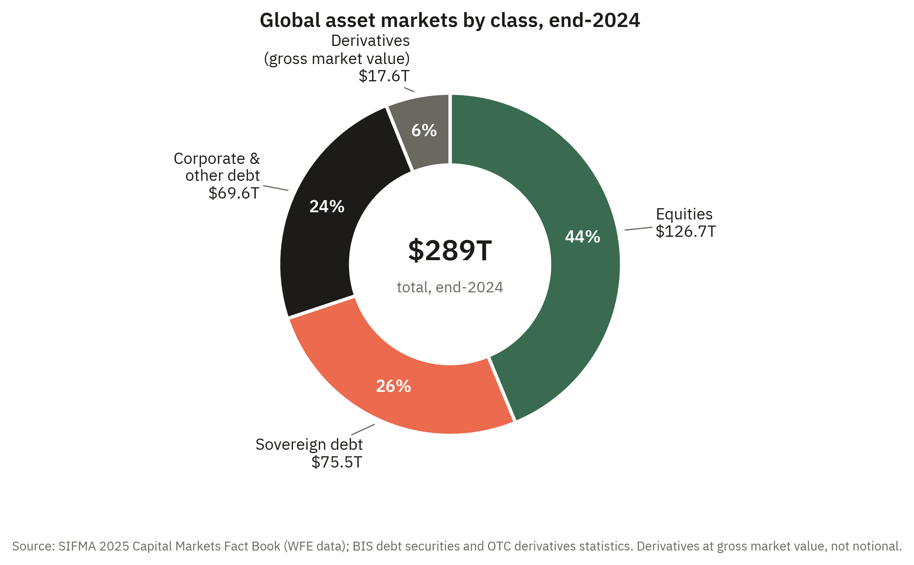
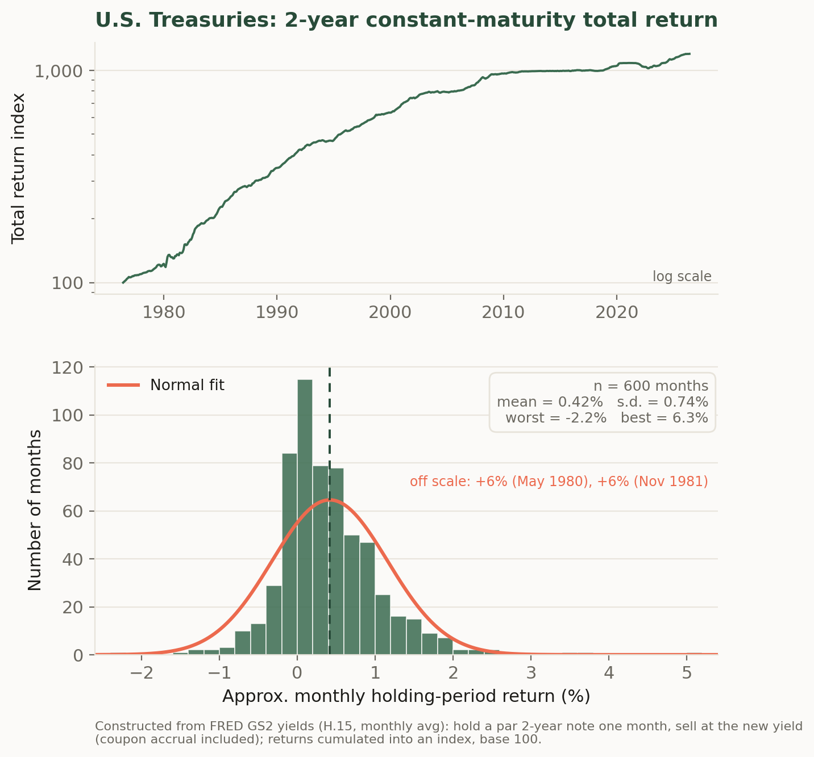
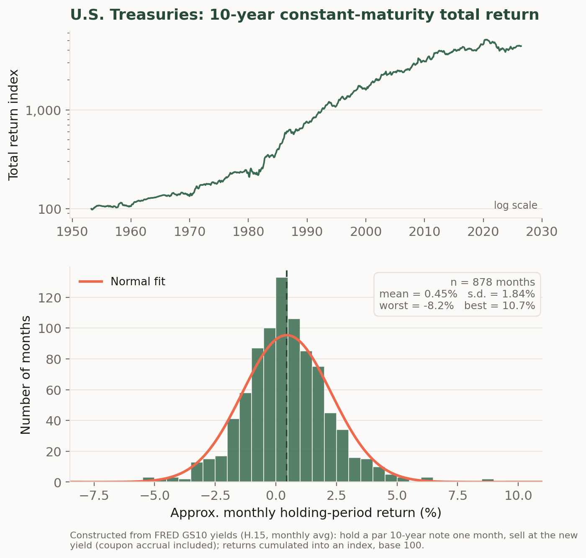
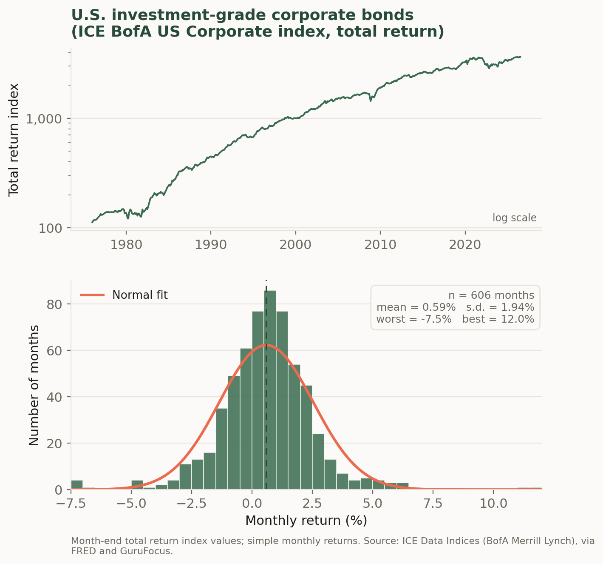
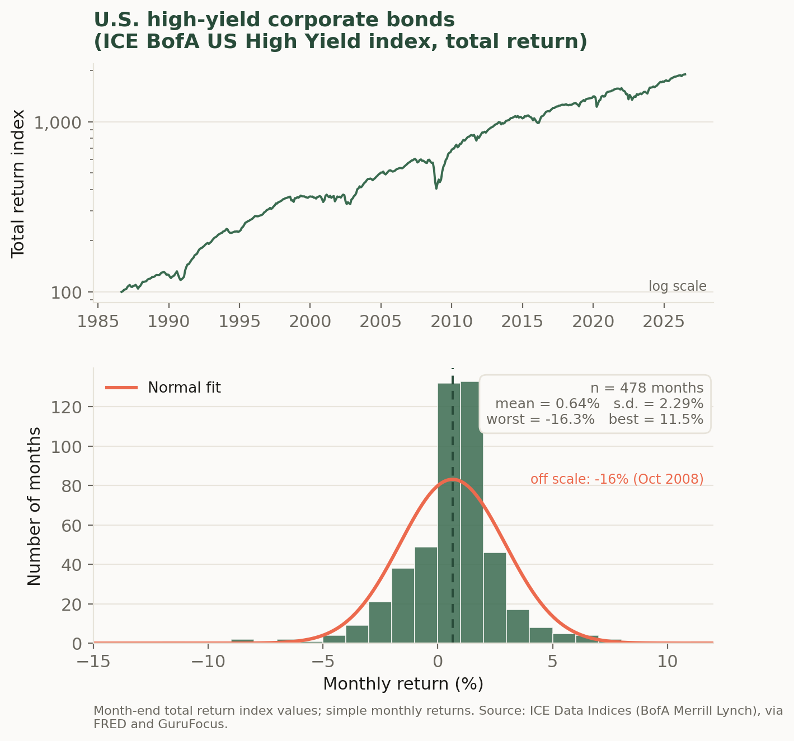

3 Markets
3.1 Introduction
Three questions animate the survey of financial markets taken up in this chapter. First, what are the broad classes of financial assets, and how much of the world’s wealth does each one represent? Second, what has each class actually paid its investors historically, and how much did investors have to endure to earn it? Third, do the different classes rise and fall together, or do their bad months arrive at different times? These questions matter because their answers are the raw material for everything that follows: the pricing theory of the coming chapters exists to explain the patterns that this chapter documents.
The first question is important because the terrain has to be mapped before it can be modeled. Financial claims come in a small number of economically distinct forms — equity, which represents ownership of a firm; fixed income, which represents a promise to repay borrowed money; currency, the claims used to settle transactions across national monies; and derivatives, whose payoffs are defined in terms of some other, underlying asset — and their relative sizes are frequently misunderstood. Debt markets are larger than equity markets despite attracting a fraction of the attention, and derivatives are routinely quoted at a notional value forty times the economically meaningful one. Getting these magnitudes right is a prerequisite for judging which markets matter and why.
The second question is where measurement begins. Reporting what an asset “returned” requires first defining a return precisely, and then confronting the fact that a single average conceals almost everything of interest. The chapter therefore looks at whole distributions of monthly returns rather than at averages alone — for U.S. equities, for short and long Treasury debt, and for investment-grade and high-yield corporate credit. Read side by side, those distributions reveal a ladder in which average return and volatility rise together, along with two facts that no single summary number captures: that the left tails of risky assets are fatter than a normal distribution allows, and that two assets with identical standard deviations can carry entirely different risks.
The third question is the seed of the theory of portfolio choice. An asset’s risk in isolation is not the same as the risk it contributes to a portfolio, and the difference turns on correlation. The chapter closes by reporting how the five assets co-move — Treasuries with each other, high-yield credit with equities, and equities with Treasuries — and by noting that it is precisely the low correlations that make a mixed portfolio steadier than any of its components. That observation is the point at which description gives way to analysis, and it is taken up formally in the mean-variance chapter that follows.
The chapter is organized as a survey. It opens by sizing the four broad asset classes at market value, and by tabulating the average return and volatility of five representative assets in the annual units investors actually quote. It then treats U.S. equities in detail — what a share of common stock actually is, how many such companies there are to invest in and why that number has shrunk by half since 1996, and what the historical record of the S&P 500 reveals about the distribution of market returns. A parallel treatment of government and corporate debt follows, and the chapter ends with the summary moments and the correlation matrix that the rest of these notes will draw on.
When a private company “goes public,” it taps the primary market — selling shares to investors for the first time — and thereafter its stock trades in the secondary market whose returns this chapter measures. In June 2026, SpaceX completed the largest IPO in history: it priced at $135 a share, raised roughly $75 billion at a valuation near $1.8 trillion, and closed its first full day up about 20%. Two even more anticipated offerings are lined up behind it — Anthropic has filed for a listing that bankers expect could top $1 trillion, and OpenAI is reportedly preparing one of its own. Each of these listings adds a new name to the equity asset class surveyed below — and, from its first day of trading onward, a new stream of the monthly returns whose distribution this chapter examines.
3.2 The assets we will study
Financial markets exist to move a handful of broad classes of asset between the people who own them and the people who want them. The remainder of these notes studies those classes in turn: equity, which represents ownership of a firm; fixed income, which represents a promise to repay borrowed money; currency, the claims used to settle transactions across national monies; and derivatives, whose payoffs are defined in terms of some other, underlying asset. We begin with the class most investors meet first, U.S. equities, and take up the others in the chapters that follow.
How much of the world’s financial wealth does each class account for? Figure 3.1 gives the answer at market value. At the end of 2024, global equity markets were worth about $127 trillion and global debt securities about $145 trillion — so debt, taken as a whole, is the larger market, even though equities dominate the financial news. The debt total divides into two roughly equal halves. Governments account for slightly more than half of all bonds outstanding — about $75 trillion — a share that has grown steadily since the financial crisis of 2008 and the pandemic of 2020, both of which were financed with heavy sovereign issuance. The remainder, about $70 trillion, is owed by corporations — banks and other financial firms, non-financial companies — and by the securitization vehicles that package mortgages and other loans into bonds.
The derivatives slice requires a word of caution, because derivatives are usually described with a much larger and much more misleading number. The notional value of outstanding derivative contracts — the face amount on which payoffs are computed — stood at roughly $700 trillion at the end of 2024, more than double everything else in the figure combined. But notional value measures the scale of the promises written, not the value of the claims they create: an interest-rate swap on $100 million of notional obligates the parties to exchange only the difference between two interest payments on that amount, which is worth a tiny fraction of $100 million. The economically comparable number is the gross market value — the cost of replacing every outstanding contract at current market prices — and by that yardstick derivatives were worth about $17.6 trillion, only around 6% of the total in Figure 3.1. The gap between the two numbers is itself a lesson in how derivatives work, and we will return to it in the chapters on forwards, futures, and options.

Before the details, the headline facts. Table 3.1 reports, for the five assets this section studies, the average return and the volatility of returns in the annual units investors actually quote. These are the orders of magnitude worth committing to memory: short Treasury debt has returned about \(5\%\) per year with very little volatility; long Treasuries and investment-grade corporate bonds sit in the \(5\)–\(7\%\) range with moderate volatility; high-yield bonds have earned close to \(8\%\) and equities close to \(9\%\) per year, with volatility that rises step for step. Everything in this section — the markets, the figures, and the distributions — is an unpacking of where this table comes from.
| Asset | Sample | Mean return (% per year) | Std. dev. (% per year) |
|---|---|---|---|
| 2-year Treasury | 1976–2026 | 5.0 | 2.6 |
| 10-year Treasury | 1953–2026 | 5.4 | 6.4 |
| Investment-grade corporate | 1976–2026 | 7.1 | 6.7 |
| High-yield corporate | 1986–2026 | 7.7 | 7.9 |
| U.S. equities (S&P 500) | 1950–2026 | 8.7 | 12.0 |
3.2.1 U.S. equities
A share of common stock is a unit of ownership in a corporation. The shareholder is not a lender to the firm but a part-owner of it, and this distinction organizes everything about how equity behaves.
- Common stock.
-
A security representing fractional ownership of a corporation. Its holder is a residual claimant on the firm’s assets and earnings — entitled to what remains only after employees, suppliers, and debtholders have been paid — and ordinarily carries the right to vote on corporate matters in proportion to shares held.
Three features follow from ownership. First, the shareholder’s claim is a residual one: bondholders and other creditors are paid on fixed schedules, and the equityholder receives whatever is left, whether that is a large distribution or nothing at all. This is why equity is riskier than the firm’s debt and why, in compensation, it has historically earned a higher average return — a trade-off that is the subject of much of the rest of these notes. Second, ownership usually confers control through the right to vote for directors and on major decisions. Third, ownership is protected by limited liability: a shareholder can lose the amount she paid for her shares but no more, so her downside is bounded while her upside is not. Firms may return cash to shareholders directly, as dividends, but a shareholder’s return comes just as much from capital gains — changes in the price at which the share itself trades in the secondary market.
How many such companies are there to invest in? Fewer than there used to be. The number of U.S.-listed domestic companies rose through the 1980s and early 1990s to a peak of 8,090 in 1996, then fell by more than half over the following three decades, to roughly 3,900 by 2025 (Figure 3.2). The decline reflects a combination of forces: waves of mergers and acquisitions that fold public firms into one another, the growth of private capital that lets companies raise large sums without listing, a slower pace of new initial public offerings, and the fixed costs and disclosure burdens of being public. The result is a market that is narrower in the number of names it contains even as, in aggregate, it has grown enormously in value.

That growth in aggregate value is easiest to see through a stock market index. An index summarizes the prices of many stocks in a single number, so that its movement over time tracks the fortunes of the market as a whole rather than any one firm. The best known is the S&P 500, a capitalization-weighted index of about five hundred of the largest U.S. companies; because those firms account for the bulk of the market’s total value, the S&P 500 serves throughout these notes as a practical stand-in for “the market” whose risk and return we will study. Its long climb — from roughly 17 in 1950 to more than 7,000 in 2026 — is shown in Figure 3.3, and the contrast with the previous figure is instructive: the population of listed firms has shrunk, but the value of the survivors, and of the market they compose, has multiplied many times over.

An index level is useful for seeing the long sweep of the market, but what an investor actually earns from one period to the next is a return. The simple return on the index over a month is the percentage change in its level, \[r_t = \frac{P_t - P_{t-1}}{P_{t-1}} = \frac{P_t}{P_{t-1}} - 1,\] where \(P_t\) is the index level at the end of month \(t\). Returns, rather than price levels, are the raw material of everything that follows: risk, diversification, and the pricing models of later chapters are all stated in terms of the distribution of returns. It is worth looking at that distribution directly. Figure 3.4 is a histogram of the roughly nine hundred monthly returns to the S&P 500 from 1950 to 2026.

Several features of the picture recur throughout these notes. The distribution is centered at a small positive number — the market rose in a typical month, averaging about \(0.7\%\), so that a bit under two-thirds of all months were up months — which is the compensation investors earn for bearing risk. It is also spread out, with a standard deviation of roughly \(3.5\%\) per month; this dispersion is precisely the risk that the return is compensation for, and measuring it is the business of the next several chapters. The bell-shaped normal curve overlaid in coral fits the center of the data reasonably well, which is why the normal distribution is such a convenient modeling assumption. But the fit is imperfect in an important way: the far left tail is fatter than the normal distribution allows, because occasional crashes — the worst month here is about \(-20\%\) — occur more often, and are more severe, than a normal distribution would predict. This combination of a modest positive average, substantial month-to-month volatility, and rare but serious losses is the empirical backdrop against which the rest of the theory is built.
3.2.2 Other asset classes
Equity is only one of the broad asset classes an investor can hold, and the S&P 500 histogram becomes far more informative when compared to those of other asset classes. This section introduces the other markets that will occupy us in later chapters — government debt and corporate debt of high and low quality — and draws for each the same pair of pictures we drew for the S&P 500: the long climb of an index and the histogram of its monthly returns. Reading these histograms side by side is the fastest way to see what makes each asset class distinctive, because the differences between them show up in the four features we highlighted above: where the distribution is centered, how spread out it is, whether it leans left or right, and how heavy its tails are.
- Fixed income.
-
A security representing a promise to repay borrowed money on a fixed schedule. Its holder is a creditor of the issuer, not an owner: she is entitled to specified coupon and principal payments, paid ahead of any distribution to shareholders, but does not share in the issuer’s success beyond them.
Treasury securities. The market for U.S. Treasury debt is the largest and most liquid bond market in the world, and Treasury yields are the benchmark against which nearly every other dollar-denominated asset is priced. Because the securities are backed by the taxing power of the U.S. government, investors treat them as free of default risk — yet Figure 3.5 and Figure 3.6 show that default-free is not risk-free. A Treasury note held for one month must be sold at whatever yield then prevails, so its return varies with interest rates; this is interest-rate risk, and it grows with the length of the promise. The two figures are constructed identically — a par note is bought at the prevailing constant-maturity yield and repriced one month later — and differ only in maturity, yet the 10-year note’s monthly returns (standard deviation about \(1.8\%\)) are two and a half times as volatile as the 2-year’s (about \(0.7\%\)). The sensitivity of a bond’s price to its yield is called duration, and we will measure it carefully in the fixed-income chapters; the comparison here is the phenomenon that concept exists to describe. Note also what neither histogram shows: the violent left tail of the equity distribution. The worst month for the 2-year note in fifty years was a loss of about \(2\%\), and for the 10-year about \(8\%\) — losses an order of magnitude milder than equities’. What asymmetry these series do display runs the other way: the 2-year note’s skewness of \(+2.3\) in Table 3.2 reflects a long right tail, the occasional very large gain that arrives when interest rates fall sharply. A default-free bond’s bad outcomes are bounded by how far rates can rise; its good outcomes are not correspondingly bounded, which is the reverse of the credit-risky pattern taken up next.


Corporate credit. Corporations borrow too, but a corporate promise may not be kept, so corporate bonds carry default risk on top of interest-rate risk. Rating agencies grade that risk, and the market splits at a bright line: bonds rated BBB−/Baa3 or better are investment grade, while those below are high yield (less politely, junk bonds). Figure 3.7 and Figure 3.8 show total return indices and monthly returns for the two halves of the market. Investment-grade credit looks like a slightly riskier cousin of the 10-year Treasury — similar volatility, a modestly higher average return as compensation for bearing default risk, and a nearly symmetric distribution. High yield is a different animal. Its overall standard deviation (about \(2.3\%\)) is only modestly higher than investment grade’s, but the shape of its distribution is sharply asymmetric: the skewness is strongly negative and the left tail is long, with the worst month — October 2008 — a loss of more than \(16\%\), roughly seven standard deviations below the mean if the normal fit were taken literally. The economics behind the shape is worth internalizing: a bond’s upside is capped, since the best that can happen is that it is repaid in full, while its downside runs all the way to default. High-yield bonds are therefore sometimes described as bond-like in good times and equity-like in bad times — a character their histogram wears openly.


Comparing the five distributions. Table 3.2 collects the summary statistics, and reading down its columns turns the five histograms into a single picture of how risk and return are organized across markets. Two of its columns need a word of definition, since they describe features of shape that the mean and standard deviation cannot capture.
- Skewness.
-
A measure of a distribution’s asymmetry about its mean. A negative value indicates a long left tail — losses that are rarer than gains but much deeper when they arrive. A positive value indicates the mirror image, a long right tail. A symmetric distribution, such as the normal, has skewness zero.
- Excess kurtosis.
-
A measure of tail thickness relative to the normal distribution, which is the benchmark and has excess kurtosis zero. A positive value means extreme outcomes in either direction occur more often than the normal predicts — the “fat tails” that make the normal approximation dangerous precisely where accuracy matters most.
The samples differ in length, and the equity series is built from monthly averages, which smooths it slightly, so the comparisons are broad-brush — but the patterns are robust. First, dispersion is a ladder: volatility rises from the 2-year Treasury, to the 10-year Treasury and investment-grade credit, to high yield, to equities, and average returns rise broadly along the same ladder. That co-movement of mean and standard deviation — more compensation where there is more risk to compensate — is the central empirical regularity that the pricing theory of the coming chapters is built to explain. Second, the ladder is not a law: the 2-year Treasury’s ratio of mean to standard deviation is the highest in the table, flattered by a sample that begins near the 1981 peak in interest rates and rides yields down for four decades. Averages computed over particular histories are evidence, not guarantees. Third, and most important for what follows, risk is not one number. The 10-year Treasury and investment-grade credit have nearly identical standard deviations, but they are exposed to different underlying forces — interest rates alone for one, interest rates plus default for the other. High yield and the 10-year Treasury also have similar standard deviations, yet one is roughly symmetric while the other loses \(16\%\) in its worst month. Standard deviation is where our study of risk begins in the next chapter, but the tails and asymmetries visible in these histograms — and the question of when each asset’s bad months arrive, and whether they arrive together — are where it will lead.
| Asset | Sample | \(n\) | Mean | Std. dev. | Skewness | Excess kurtosis | Worst | Best |
|---|---|---|---|---|---|---|---|---|
| 2-year Treasury | 1976–2026 | 600 | 0.42 | 0.74 | 2.3 | 13.8 | −2.2 | 6.3 |
| 10-year Treasury | 1953–2026 | 878 | 0.45 | 1.84 | 0.6 | 3.9 | −8.2 | 10.7 |
| Investment-grade corporate | 1976–2026 | 606 | 0.59 | 1.94 | 0.1 | 5.2 | −7.5 | 12.0 |
| High-yield corporate | 1986–2026 | 478 | 0.64 | 2.29 | −1.2 | 10.0 | −16.3 | 11.5 |
| U.S. equities (S&P 500) | 1950–2026 | 917 | 0.73 | 3.47 | −0.9 | 3.5 | −20.4 | 12.0 |
One more set of numbers belongs in this first look at the data, because everything in the chapters on portfolio choice depends on it: how these assets move together.
- Correlation.
-
A standardized measure of the tendency of two assets’ returns to move together, ranging from \(-1\) to \(+1\). A correlation of \(+1\) means the two move in lockstep; \(-1\) means they move in exactly opposite directions; and \(0\) means knowing one asset’s return this month tells you nothing about the other’s. The formal definition, in terms of the covariance between the two return series, is given in the next chapter.
- Diversification.
-
The reduction in portfolio risk obtained by combining assets that do not move together. Because their fluctuations partially offset one another within the portfolio, the portfolio’s volatility falls below the weighted average of its components’ volatilities — and it does so without any corresponding sacrifice of expected return, which is what makes diversification the rare free lunch in finance.
Table 3.3 reports the correlations between the five assets’ monthly returns over the forty years for which all five series overlap. Three of its entries deserve to be remembered. The two Treasuries are strongly correlated (\(0.76\)) — no surprise, since a single force, the level of interest rates, drives them both. High-yield bonds co-move far more with equities (\(0.64\)) than with the 10-year Treasury (\(0.11\)): their histogram looked equity-like in bad times, and their correlation says the same thing — the default risk that dominates high yield is the same business-cycle risk that drives the stock market. And equities have been roughly uncorrelated with Treasuries over this sample (about \(-0.1\)), which is precisely why the classic stock-and-bond portfolio works: when assets do not move together, the bad months of one are, on average, ordinary months for the other, and a mix of the two is steadier than either alone. Low correlation is the raw material of diversification, and measuring its consequences precisely is where the mean-variance chapter begins.
| 2-yr Treasury | 10-yr Treasury | IG corporate | High yield | Equities | |
|---|---|---|---|---|---|
| 2-year Treasury | 1.00 | 0.76 | 0.39 | 0.03 | −0.14 |
| 10-year Treasury | 0.76 | 1.00 | 0.52 | 0.11 | −0.09 |
| Investment-grade corporate | 0.39 | 0.52 | 1.00 | 0.59 | 0.28 |
| High-yield corporate | 0.03 | 0.11 | 0.59 | 1.00 | 0.64 |
| U.S. equities (S&P 500) | −0.14 | −0.09 | 0.28 | 0.64 | 1.00 |
Two classes of asset remain. Currencies — claims used to settle transactions across national monies — and derivatives — securities such as forwards, futures, and options whose payoffs are defined in terms of some other, underlying asset — have return properties that depend so directly on their contractual structure that they are best studied alongside that structure, and we take them up in the chapters on forwards, futures, and options later in these notes.
3.3 Application: A founder deciding how to go public
Imagine the chief financial officer of a fast-growing software company weighing how to raise its next round of capital and give early investors a way to cash out. The choices on the table are a traditional initial public offering, a direct listing, or remaining private and selling a stake to a large fund. Framed in this chapter’s terms, the decision is about which asset class the firm’s claims will belong to and who will bear their risk. Listing converts a concentrated private stake into publicly traded equity, and equity — as Table 3.1 records — is the class investors have historically demanded roughly \(9\%\) a year to hold, precisely because its returns carry the volatility and the fat left tail visible in Figure 3.4. That required return is the firm’s cost of equity capital. It is also why the CFO’s alternative of raising debt is cheaper in coupon terms and more dangerous in obligation terms: bondholders are paid first and their claim is fixed, which is the same asymmetry that gives corporate credit its own distinctive return distribution. Deciding how to go public is, at bottom, deciding what the firm will pay for capital, and the historical record surveyed in this chapter is where that price comes from.
The Indicator from Planet Money (NPR) — “The SpaceX IPO drama explained”: why a company goes public, and how the primary market has changed now that giants like SpaceX can stay private for so long.
3.4 Homework problems
3.4.1 Conceptual
MKT-C1. Distinguish equity from fixed income in terms of the claim each represents. In your answer, state who is an owner and who is a creditor, which claim is paid first when the issuing firm distributes cash, and why the label residual claimant applies to only one of them. Then explain why this ordering — not any difference in the firms involved — is the fundamental reason equity has historically earned a higher average return than the same firm’s debt.
MKT-C2. The chapter reports that outstanding derivative contracts had a notional value of roughly $700 trillion at the end of 2024 but a gross market value of only about $17.6 trillion. Explain what each of these two numbers measures, and use the chapter’s interest-rate-swap example to explain why the notional figure vastly overstates the economic size of the derivatives market. Which of the two belongs in a chart comparing derivatives to stocks and bonds, and why?
MKT-C3. Global debt securities (about $145 trillion) are worth more than global equities (about $127 trillion), yet equities dominate financial news coverage. Offer an explanation for this mismatch in attention. In your answer, note what fraction of the debt total is sovereign rather than corporate, and explain why the sovereign share has grown since 2008 and again since 2020.
MKT-C4. A share of common stock makes its holder a residual claimant on the firm. Explain what this means for the shareholder’s cash flows in a very good year and in a year in which the firm barely covers its obligations. Then explain why residual status is the source of both equity’s higher average return and the fat left tail visible in Figure 3.4.
MKT-C5. Explain the roles of control and limited liability in the definition of common stock. Why does limited liability make a shareholder’s downside bounded but her upside unbounded, and how does this asymmetry differ from the payoff to a bondholder of the same firm? Relate your answer to why high-yield corporate bond returns are strongly negatively skewed (skewness \(-1.2\) in Table 3.2) while equity returns, though also negatively skewed, retain a long right tail as well.
MKT-C6. The number of U.S.-listed domestic companies peaked at 8,090 in 1996 and had fallen to roughly 3,900 by 2025 (Figure 3.2), even as the aggregate value of the U.S. stock market multiplied many times over (Figure 3.3). Explain how both facts can be true simultaneously, and give three distinct forces that contributed to the decline in the number of listings.
MKT-C7. Explain what a stock market index is and what it means for the S&P 500 to be capitalization-weighted. Why does a capitalization-weighted index of roughly five hundred firms serve as a reasonable stand-in for “the market” as a whole, and what kind of company’s fortunes would such an index systematically underweight?
MKT-C8. The chapter defines the simple return \(r_t = P_t/P_{t-1} - 1\) and asserts that returns, not price levels, are “the raw material of everything that follows.” Explain why the theory of the following chapters is stated in returns rather than prices. In your answer, address comparability across assets of different price levels and why the level of an index is close to meaningless on its own.
MKT-C9. Describe the four features of the S&P 500 monthly return histogram (Figure 3.4) that the chapter highlights: where the distribution is centered, how spread out it is, how well the fitted normal density describes the middle, and how it fails in the left tail. Explain what economic meaning attaches to each of the first two, and why the failure in the left tail is the one that matters most to an investor.
MKT-C10. U.S. Treasury securities are regarded as free of default risk, yet Figure 3.5 and Figure 3.6 show that their monthly returns are far from constant. Explain the source of this variation, why the 10-year note’s returns are roughly two and a half times as volatile as the 2-year’s when the two figures are constructed identically, and what the term duration names. Explain the slogan “default-free is not risk-free.”
MKT-C11. High-yield corporate bonds have a standard deviation only modestly above investment-grade credit’s, yet their return distribution is sharply negatively skewed with a worst month of roughly \(-16\%\). Explain the economics that produces this asymmetry, using the observation that a bond’s upside is capped at repayment in full while its downside runs all the way to default. Explain what is meant by the description that high-yield bonds are “bond-like in good times and equity-like in bad times,” and how Table 3.3 corroborates it.
MKT-C12. The chapter concludes that “risk is not one number.” Support this claim using two comparisons from Table 3.2: the 10-year Treasury versus investment-grade credit (nearly identical standard deviations), and the 10-year Treasury versus high yield (similar standard deviations, very different shapes). Then explain, using Table 3.3, why an asset’s standard deviation in isolation is not the same as the risk it contributes to a portfolio, and why the near-zero equity–Treasury correlation is what makes the classic stock-and-bond portfolio work.
3.4.2 Quantitative
MKT-Q1. A stock index stands at \(P_0 = 4{,}820\) at the end of December, \(P_1 = 4{,}675\) at the end of January, and \(P_2 = 4{,}953\) at the end of February. (a) Using \(r_t = P_t/P_{t-1} - 1\), compute the January and February simple returns. (b) Compute the two-month return directly from \(P_0\) and \(P_2\). (c) Show that the two-month return is not the sum of the two monthly returns, and state the correct relationship between them.
MKT-Q2. The S&P 500 stood at roughly 17 in 1950 and above 7,000 in 2026 (Figure 3.3), a span of 76 years. (a) Compute the total growth factor over the period. (b) Compute the average annual compound growth rate \(g\) satisfying \(17(1+g)^{76} = 7000\). (c) Table 3.1 reports an average annual return of \(8.7\%\) for the S&P 500. Explain why your answer to (b) is smaller than that figure, and why it would still be smaller even if the two were measured over identical samples.
MKT-Q3. Table 3.2 reports S&P 500 monthly returns with a mean of \(0.73\%\) and a standard deviation of \(3.47\%\). Annualize both using the chapter’s convention — multiply the mean by 12 and the standard deviation by \(\sqrt{12}\) — and confirm that your answers reproduce the equity row of Table 3.1. Then explain why the standard deviation scales with \(\sqrt{12}\) rather than with 12.
MKT-Q4. Repeat the annualization of MKT-Q3 for the 2-year Treasury (monthly mean \(0.42\%\), standard deviation \(0.74\%\)) and the high-yield corporate index (mean \(0.64\%\), standard deviation \(2.29\%\)). Compute the ratio of annualized mean return to annualized standard deviation for each, and for the S&P 500 from MKT-Q3. Which asset has the highest ratio, and what caution does the chapter attach to reading that result as a statement about the future?
MKT-Q5. Treat S&P 500 monthly returns as normally distributed with mean \(0.73\%\) and standard deviation \(3.47\%\). (a) How many standard deviations below the mean is a return of \(-10\%\)? Using a normal table, what probability does the normal assign to such a month, and how many such months would you expect in the \(n = 917\) months of the sample? (b) The actual worst month in the sample was \(-20.4\%\). How many standard deviations below the mean is that, and roughly how often would a normal distribution produce it? (c) What do your answers demonstrate about the adequacy of the normal approximation?
MKT-Q6. High-yield corporate bonds have a monthly mean of \(0.64\%\) and standard deviation of \(2.29\%\) over \(n = 478\) months, with a worst month (October 2008) of \(-16.3\%\). (a) Express the worst month as a number of standard deviations below the mean and verify the chapter’s claim that it is “roughly seven standard deviations.” (b) Compare the frequency a normal distribution would assign to such an event against the once-in-478-months frequency actually observed. (c) Explain why an investor who sized her positions using standard deviation alone would have badly misjudged this market.
MKT-Q7. Figure 3.1 is built from the following end-2024 market values: equities $126.7 trillion, sovereign debt $75.5 trillion, corporate debt $69.6 trillion, and derivatives at a gross market value of $17.6 trillion. (a) Compute the total and each class’s percentage share. (b) Now rebuild the pie using the $700 trillion notional value of derivatives in place of gross market value, and recompute the derivatives share. (c) Comment on the difference between your two answers and on what the second version would lead a reader to believe.
MKT-Q8. Consider a portfolio holding equities and the 10-year Treasury, with monthly standard deviations \(\sigma_E = 3.47\%\) and \(\sigma_B = 1.84\%\) and correlation \(\rho = -0.09\) from Table 3.3. The standard deviation of a portfolio holding weight \(w\) in equities is \[\sigma_P = \sqrt{w^2\sigma_E^2 + (1-w)^2\sigma_B^2 + 2w(1-w)\rho\,\sigma_E\sigma_B}.\] (a) Compute \(\sigma_P\) for \(w = 0.5\). (b) Compute the weighted average \(0.5\sigma_E + 0.5\sigma_B\) and explain why \(\sigma_P\) falls short of it. (c) Recompute \(\sigma_P\) at \(w = 0.5\) assuming instead that \(\rho = 0.9\), and state what happens to the diversification benefit as correlation rises toward 1.